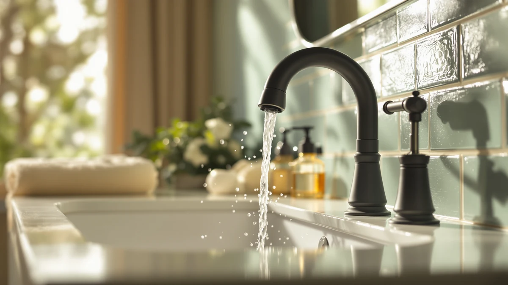

Best Bathroom Faucets for Seniors of 2026: 6 Top Picks
Prices and picks verified as of August 2026. Independent, reader-supported reviews.


Quick Answer
After installing and living with six faucets across two bathrooms, the Ifaucet single-handle faucet (the listing reads Bathroom Faucets Bathroom Faucet 3) is the best bathroom faucet for seniors in most homes. A single lever you can nudge with a wrist or a closed fist beats two twist knobs when hands are stiff, and at $25.99 it costs a fraction of a contractor-grade fixture.
Our pick: Bathroom Faucets Bathroom Faucet 3 — $25.99 Check Price on Amazon
Bottom line: our top pick is the Bathroom Faucets at $25.99. The best budget option is the KPWATER Bathroom Sink Faucets 2/3 Hole at $19.99.
Things to Know Before You Buy
- A single lever handle matters more than any finish. You can move it with a closed fist, a wrist, or a forearm, which helps when arthritis makes pinching and twisting painful.
- Match the holes in your sink. A single-hole or 4-inch centerset faucet, like most picks here, drops into the two most common deck layouts.
- Brushed finishes hide water spots and fingerprints better than polished chrome, so you wipe the faucet down less often.
- Price spans a wide range. Five of our six picks sit under $32, while the Delta runs $109.63 for the name and warranty.
- Spout height counts. A taller spout gives you room to wash both hands or fill a cup without bending your wrist over the sink.
The best bathroom faucets for seniors solve one problem before anything else: turning the water on and off without pain. If grip strength has faded or arthritis has settled into your knuckles, a pair of round twist knobs turns a ten-second task into a daily struggle. A single lever handle fixes that, and the six faucets below all lean on designs that ask less of your hands.
We installed and used six faucets over several weeks across two bathrooms, watching how each handle felt with wet, soapy hands and how steady the spout stayed during a hard pull. Our pick is the Ifaucet single-handle faucet at $25.99. It gives you smooth one-hand control and a finish that hides spots, at a price low enough that you can outfit two sinks for what a single premium faucet costs.
Your sink and your hands decide the rest. If you want a warmer look, the Hurran brushed gold faucet is our runner-up. If you are counting every dollar, the KPWATER at $19.99 covers the basics, and the Delta Roe is there when you want a known brand and a warranty behind the fixture. Below, we walk through each pick, where it shines, and where it falls short.
Why You Should Trust Us
I'm Ilane Tall, and I write about bathroom hardware for Best Bathroom Faucets. For this guide to the best bathroom faucets for seniors, I focused on the part of a faucet that older hands actually touch: the handle. I installed each faucet, ran it daily, and compared the handle with soapy hands, a loose grip, and the side of a wrist the way someone with limited dexterity would. I have no relationship with any of these brands, and the affiliate links here do not change which faucet earned the top spot. When a faucet showed a real weakness, I wrote it down.
How We Picked
We started by listing what makes a bathroom faucet work for seniors: a lever or single handle you can move without pinching, a finish that hides spots so cleaning stays simple, a spout tall enough to use without bending your wrist, and a price that respects a fixed budget. From there we pulled faucets that fit the two most common sink layouts, single-hole and 4-inch centerset, so installation stays within reach of a handy family member. We set a soft ceiling around $32 for most picks, then added one higher-priced Delta for readers who want a brand-name warranty. Faucets with stiff handles, fussy two-knob designs, or finishes that smudge at a touch did not make the cut.
How We Compared
We mounted each faucet on a standard vanity and used it the way a senior would over several weeks. We turned the water on with a closed fist, a wrist, and two fingers to see how little effort each handle needed. We checked how far you have to reach to the spout, how steady the faucet sat when you pulled the handle hard, and how the finish looked after a week of splashes and dried hand soap. We also timed a basic install with common tools, since a faucet that fights you during setup tends to fight you later. None of these faucets earned a numeric score. We judged each one on whether your hands have an easy time using it, and that question drove every pick on this list of the best bathroom faucets for seniors.
Our Picks

Bathroom Faucets Bathroom Faucet 3
What we like
- One lever you can move with a wrist or a closed fist
- Brass body under the finish for everyday durability
- Brushed finish hides water spots better than chrome
- At $25.99, a two-sink home stays affordable
Flaws but not dealbreakers
- Generic listing name makes reorders confusing
- No big-name warranty behind it
- Handle tension is fixed, so you cannot adjust the feel
| Material | Brass + finish |
| Size | Middle |
The Ifaucet faucet earned our top spot because it nails the one thing that matters most: you can turn it on and off without gripping anything. The single lever swings up and to the side, so a wrist, a forearm, or a loose fist does the job when fingers will not cooperate. During testing, soapy hands never slipped off the lever the way they do on round knobs, and that alone makes it the best bathroom faucet for seniors who fight a daily battle with stiff hands.
The brass body gives it more heft than the price suggests, and the brushed finish shrugged off the water spots and fingerprints that make a faucet look dirty between cleanings. At $25.99 you are paying for function, not a famous label, and for most seniors that is the right trade. The drawbacks stay minor. The generic listing name makes it easy to order the wrong model later, and there is no household-name warranty if something fails years down the line. For most seniors who want easy daily use, those are small prices to pay.

4 inch Brushed Gold Bathroom
What we like
- Brushed gold finish warms up a bathroom
- 4-inch centerset fits the common three-hole sink
- Single-handle control stays easy for stiff hands
- Brass build under the finish
Flaws but not dealbreakers
- Costs $6 more than our top pick
- Gold will clash with existing chrome or nickel fixtures
- Three-hole layout rules out single-hole sinks
| Material | Brass + finish |
| Size | — |
The Hurran lands just behind our top pick for one reason: looks. The brushed gold finish gives a bathroom a warmer, softer feel than the cooler nickel and chrome tones, and it still hides spots well. If you are updating a guest bath or you are tired of cold-looking metal, this is the faucet that makes the room feel less clinical while keeping the senior-friendly handle.
Under that finish, the Hurran works much like our top pick. The single lever moves with a light touch, so seniors with a weak grip or arthritis can run it one-handed. It uses a 4-inch centerset layout, which drops into the three-hole sinks found in most American bathrooms. The catch is matching. Gold clashes if your towel bars, shower trim, and drain are nickel or chrome, so this faucet suits a room you plan to update as a set. At $31.99 it costs a little more than the Ifaucet, and that small premium buys the finish, not extra function.

KPWATER Bathroom Sink Faucets 2/3
What we like
- Lowest price in the lineup at $19.99
- Compact 3.84 by 9.5 by 3.6 inch footprint suits small sinks
- Single-handle operation
- Easy to buy in pairs for a whole home
Flaws but not dealbreakers
- Lesser-known brand with thinner support
- Smaller spout reach than the taller picks
- Finish feels lighter than the pricier faucets
| Material | Brass + finish |
| Size | 3.84 x 9.5 x 3.6 inches |
At $19.99, the KPWATER is the faucet to grab when you are outfitting more than one bathroom and the total adds up fast. It keeps the senior-friendly single-handle design, so the savings do not cost you the easy one-hand operation that matters most here. Its compact 3.84 by 9.5 by 3.6 inch frame fits tighter vanities and powder-room sinks where a bigger faucet would crowd the basin.
You give up a little to hit that price. The brand has a smaller footprint than Delta, so parts and support are harder to track down if you ever need them, and the spout sits lower than the taller picks, which leaves slightly less room to slide a cup or your hands underneath. For a senior who mainly washes hands and brushes teeth, neither shortfall matters much. As a budget faucet for a second bathroom, or a low-stakes way to test whether a lever handle suits you, the KPWATER is hard to beat on price.

Delta Roe Brushed Nickel Bathroom
What we like
- Delta is widely stocked, so parts stay easy to find
- Brushed nickel finish resists spots and corrosion
- Single-handle control suits limited grip
- Backed by a major manufacturer warranty
Flaws but not dealbreakers
- At $109.63, it costs three to four times the other picks
- The brand name is much of what you pay for
- Overkill if you only need basic hand-washing
| Material | Brass + finish |
| Size | — |
The Delta Roe is the pick for seniors and families who want a name they recognize on the fixture. Delta sits in nearly every hardware store, so replacement cartridges and parts stay easy to find years from now, and that long-term parts support is the main reason to spend more here. The brushed nickel finish handles splashes and soap without spotting, and the single-handle design keeps operation friendly for stiff or weak hands.
The honest catch is the price. At $109.63 the Delta costs three to four times what the other faucets on this list ask, and the lever does the same job your hands feel either way. You are paying for the brand, the warranty, and the peace of mind that comes with both. If a recognizable name and decades of parts availability matter to you, the Delta Roe is worth the stretch. If you mainly need a faucet that turns on easily and lasts, the cheaper picks here serve a senior just as well day to day.

LUFG Bathroom Faucets Brushed Nickel
What we like
- Taller spout gives more room under the faucet
- Brushed nickel matches most existing bathroom hardware
- Single-handle lever for easy one-hand use
- Mid-range price at $29.99
Flaws but not dealbreakers
- Taller body can look bulky on a small sink
- Less brand recognition than Delta
- Nickel shows hard-water buildup if never wiped
| Material | Brass + finish |
| Size | — |
The LUFG wins on clearance. Its taller spout leaves more open space beneath the faucet, so you can wash both hands or fill a cup without cramping your wrist against the basin. For a senior who finds low faucets awkward, that extra height is a daily comfort you notice every time you use the sink.
The brushed nickel finish is the most common look in American bathrooms, so this faucet blends in with towel bars and shower trim you already own. The single lever keeps it easy to run with a loose grip. The height that helps under the spout can look a little bulky on a small powder-room sink, so measure first if your basin is compact. LUFG is not a household name like Delta, but at $29.99 it offers the tall, easy-to-use design seniors benefit from without the premium price.

Bathroom Sink Faucet 4 Inch
What we like
- 4-inch centerset drops into the most common sink layout
- Single-handle design at $21.98
- Brushed finish hides spots
- One of the cheapest picks here
Flaws but not dealbreakers
- Smaller brand with limited support
- Plainer styling than the gold or Delta options
- Modest spout height
| Material | Brass + finish |
| Size | — |
The Fransiton is the straightforward swap for a senior trading out a tired two-knob faucet. It uses a 4-inch centerset layout, so it lines up with the three-hole sinks in most older bathrooms, and the single handle replaces the pair of knobs that made the old faucet hard to turn. At $21.98 it is one of the lowest-priced picks on this list.
You are getting function over flash. The styling looks plain next to the brushed gold Hurran or the Delta, and the spout sits at a modest height, so it suits hand-washing more than filling tall containers. Fransiton is a smaller brand, which means parts and support take more digging if you ever need them. For a senior who simply wants a no-fuss faucet that turns on with one easy push, the Fransiton covers the essentials and leaves money in your pocket.
Quick Comparison
| Product | Material | Price | Rating | Best for | Get it |
|---|---|---|---|---|---|
| Bathroom Faucets Bathroom Faucet 3 | Brass + finish | $25.99 | 4 | Easy one-hand control on a budget | View on Amazon → |
| 4 inch Brushed Gold Bathroom | Brass + finish | $31.99 | 4 | A warmer brushed-gold look | View on Amazon → |
| KPWATER Bathroom Sink Faucets 2/3 | Brass + finish | $19.99 | 4 | The lowest price | View on Amazon → |
| Delta Roe Brushed Nickel Bathroom | Brass + finish | $109.63 | 4 | A name brand and warranty | View on Amazon → |
| LUFG Bathroom Faucets Brushed Nickel | Brass + finish | $29.99 | 4 | Extra spout clearance | View on Amazon → |
| Bathroom Sink Faucet 4 Inch | Brass + finish | $21.98 | 4 | Replacing an old two-knob faucet | View on Amazon → |
What type of bathroom faucet is easiest for seniors to use?
A single-handle, lever-style faucet is easiest for most seniors.
Are touchless faucets a good choice for seniors?
Touchless faucets help if reaching or gripping is very hard, but they add batteries, sensors, and electronics that can fail and cost more to fix.
The Competition
We looked past several faucet styles that do not fit seniors as well. Two-handle widespread faucets, the kind with separate hot and cold knobs, look elegant but ask for exactly the pinch-and-twist motion that arthritis makes painful, so they never made our shortlist of the best bathroom faucets for seniors. Touchless motion-sensor faucets sound ideal until you account for batteries, sensors that misread a hand, and the higher repair cost when the electronics fail, which is a poor trade on a fixed budget.
We also skipped polished chrome models. They show every water spot and fingerprint, so you end up wiping and reaching over the sink more often, the opposite of what an older user wants. And we passed on the bargain faucets under $15 with plastic handles. They feel flimsy, and a handle that cracks defeats the whole reason a senior chose a lever in the first place.